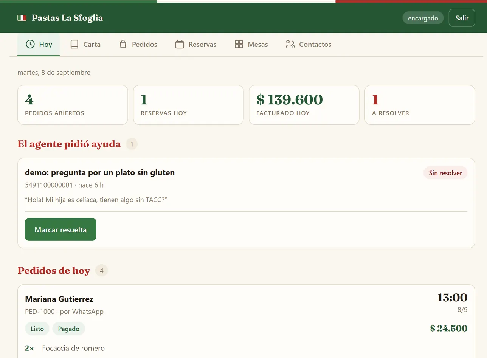
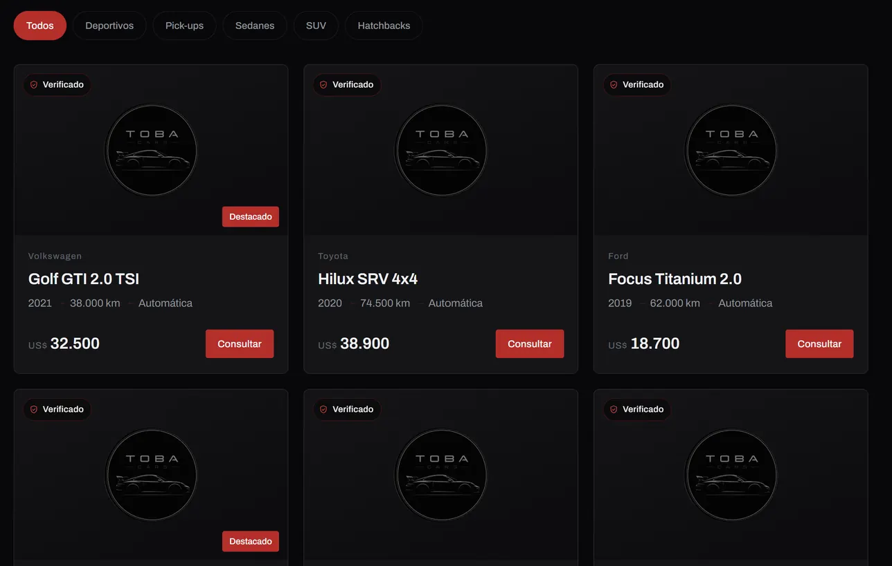

Atención 24 horas
Agentes de WhatsApp
Un asistente que contesta el WhatsApp del negocio las 24 horas: responde dudas, saca turnos, toma pedidos, y cuando el tema es delicado lo pasa a una persona sin que el cliente lo note.
Bienvenido a
Atendé como una empresa grande, sin pagar como una.
Construimos agentes de WhatsApp con IA, automatizaciones y paneles de gestión para PyMEs, emprendedores y agencias. Sistemas concretos que podés mirar funcionando, no demos que se caen si el cliente pregunta algo fuera del guion.

Turnos por WhatsApp · Pedidos y reservas · Recordatorios automáticos · Lectura de comprobantes · Conciliación de pagos · Calificación de leads · Paneles con permisos · Alertas internas · Carta que se actualiza sola · Derivación a una persona ·
Lo que medimos, no lo que prometemos
Seis cosas que hacemos bien, explicadas en criollo. Si alguna te suena al problema que tenés hoy, escribinos y te contamos cómo lo resolvemos.
Atención 24 horas
Un asistente que contesta el WhatsApp del negocio las 24 horas: responde dudas, saca turnos, toma pedidos, y cuando el tema es delicado lo pasa a una persona sin que el cliente lo note.
Ventas
Mide qué tan cerca está cada consulta de comprar (frío, tibio o caliente) con un puntaje explicado, y dispara el seguimiento correcto para cada caso.
Procesos
Conectamos las herramientas que ya usás, WhatsApp, planillas, bases, pagos, calendarios, para que los avisos, recordatorios y reportes pasen solos.
Gestión
Una pantalla propia del negocio donde el equipo ve turnos, pedidos, conversaciones y métricas, con permisos distintos según el rol.
Presencia digital
Hechos a mano, no con plantillas de constructor: livianos, rápidos, bien en el celular, con botón de WhatsApp y una estructura pensada para convertir.
Calidad
Revisamos automatizaciones o agentes que ya tenés, propios o de otro proveedor, para encontrar dónde fallan antes de que lo note un cliente.
Hay mucha oferta de "IA" que en la práctica es una respuesta automática con buena presentación. Estas seis cosas son las que se pueden verificar en un sistema nuestro.
Cada proyecto se prueba de punta a punta antes de mostrarlo: conversaciones reales, casos límite y errores intencionales para ver que el sistema reacciona bien.
Medimos lo que el sistema ahorra: horas de atención, mensajes resueltos sin intervención humana, consultas fuera de horario que antes se perdían. Vos ves el número.
Cuando el sistema decide algo, por ejemplo que un cliente está listo para comprar, muestra por qué, con la frase textual que lo justifica. Nada de cajas negras.
Si no puede resolver algo, no se queda callado ni inventa: avisa a una persona del equipo y sigue atendiendo mientras tanto.
Cada sistema separa lo que puede ver o hacer cada tipo de usuario: el mostrador no ve lo mismo que la cocina, y un cliente no puede tocar la reserva de otro.
Nuestros sistemas grandes están armados como plantilla: adaptarlos a un negocio nuevo es cargar sus datos, horarios, precios, WhatsApp, no programar de cero.
Trabajamos en etapas chicas y demostrables. Nunca vas a estar esperando meses para ver si funciona.
Entendemos el proceso real del negocio, no lo que debería pasar sino lo que pasa hoy: dónde se pierden clientes y qué tareas comen más tiempo.
Construimos en etapas. Cada una termina en algo que se puede probar funcionando, no en una promesa a futuro.
Antes de entregar probamos con casos límite a propósito: preguntas fuera de tema, intentos de romperlo, situaciones delicadas como una urgencia médica.
El sistema se entrega con sus métricas: cuántas conversaciones resolvió solo, cuánto tiempo ahorró, cuánta atención hubo fuera del horario.
Si el proyecto está pensado como plantilla reutilizable, migrarlo a un negocio nuevo es cargar sus datos, no reprogramar.
Dejamos manuales pensados para cada persona que va a usar el sistema: uno para quien lo usa todos los días y otro para quien decide comprarlo.
Cuatro proyectos propios, con marcas y datos ficticios, construidos para demostrar de qué somos capaces. Todavía no son clientes reales, y lo decimos de entrada, porque el punto no es el testimonio: es que el sistema existe y se puede abrir.

Caso insignia · Clínicas
Recepcionista de WhatsApp que saca turnos según la disponibilidad real de cada médico, lee comprobantes de pago, manda recordatorios y reconoce una urgencia para mandarla a la guardia en vez de darle un turno.

Gastronomía
Toma pedidos y reservas por WhatsApp como lo haría un empleado: conoce el menú y lo agotado en tiempo real, valida horarios de retiro y jamás ofrece un plato que no hay. Con carta pública que se actualiza sola.
Interés del cliente · turno a turnoCALIENTE · 82
Esquema del panel de calificación. Cada puntaje viene con la frase del cliente que lo justifica.
Venta con IA
Landing de un producto con un asistente que responde objeciones y, cuando detecta intención real de compra, pide el contacto y lo califica con un puntaje explicado. Según el resultado dispara solo el seguimiento correcto.

Sitio a medida
Sitio de venta para una concesionaria, hecho a mano sin plantillas: catálogo filtrable por tipo de vehículo, WhatsApp en cada punto de contacto, accesible con teclado y lectores de pantalla, rápido en cualquier celular.
Contanos qué pasa hoy en tu negocio: clientes que se pierden, tiempo que se va en tareas repetidas, o gestión desordenada. La primera charla es para entender el proceso, no para venderte nada.
Canal principal
Te contesta una persona. Si estamos ocupados, te contesta el sistema y te avisamos igual.
Abrir WhatsApp